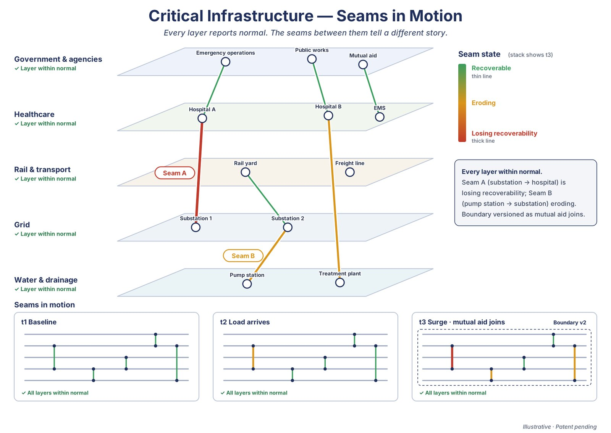
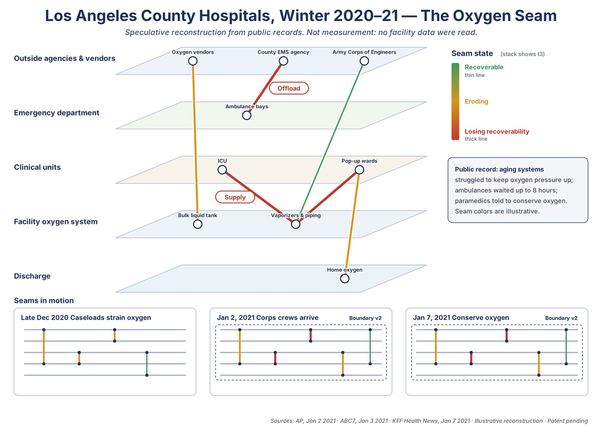

Problem Space 7 of 7 · Seams in motion
Do seams hold under load as the boundary shifts?
In a regional event or a hospital surge, each system or unit can be working flat out on its own terms while the joints between them absorb the load. In Los Angeles County in winter 2020–21, aging hospital oxygen systems struggled to keep pressure up, ambulances waited up to eight hours to offload, and paramedics were told to conserve oxygen: the strain sat in the seams between supply, facility, units and EMS. The instrument reads those seams as the load arrives and as partners join, with the measurement boundary versioned each time it changes, so the reading stays auditable. Applied to an organization, this is the Organizational MRI.
You'll recognize this if every agency or unit performed to plan during the surge, and the after-action review still found the failures between them.


Who uses it
State and county emergency management, utilities, hospital coalitions, health-system leadership and capacity teams.
The path
Reconstruct a past event first, then read seams during exercises, then live operations under governance.
Units, not people
In organizations, it measures relationships between units and partners, never individual staff.
One Question Challenge
Can the answer to one question begin a transformation for your organization?
Bring us your version of this question. Submit one well-formed question about the relationships holding your system together. If the structural signal is present, you will know it; if not, the engagement stops. No data leaves your environment. No implementation required. No commitment beyond the question itself.
Take the ChallengeThe usual starting point is the One Question Challenge, or a bounded Structural Integrity Scan from existing records.
Figures are illustrative. SCFL-Quad is patent pending. Upstream Coherence Measurement Stratum (UCMS).